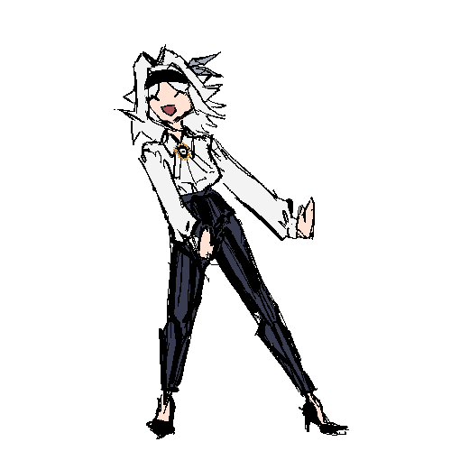

I'll be using this place as a navigation hub besides using github itself
Screw Squarespace because I can make my own site. Sure it's not that shiny but like bruh this is easy as fuck boooi

I'm a depressed and autistic transgender artist who's also into technology. I'm an IT major with a cyber foresnics track and hoping that I'll start my career by being
in the help desk bc i have no work experience even if my soon to be bachlor degree makes me much more qualified for a bigger job i just don't have the work experience.
eventually, I want to do web design and maybe even web development because im much more passionate about that than cyber forensics mainly because I feel like cyber forensics
is a bigger cliff to climb than web design because I at least have more experience in web design than cyber forensics even if my track is cyber forensics. God maybe I should've done
sys admin instead because maybe I'll be more prepared for web dev but no one has a fucking crystal ball with them and even if you do and you scry into it its not going to be exact.
same with catromancy, it only works with more immediate futures instead of years in advance and i know from experience. That and I don't think cartomancy can predict things a year in advance either
but that's a whole can of worms I won't get into.
I used to do comics but im too depressed rn for comics. maybe if I had like a team of a writer and I'll be the artist or something like that but doing comics yourself, especially those with long stories, is
hard.
what I've been doing instead is writing and you can read my works on the Wattpad and AO3 which you can press the two buttons at the nav above :3
no current projects that I can tell you about because I'm a perfectionist
again, im too depresso rn i've lost my hopes and dreams